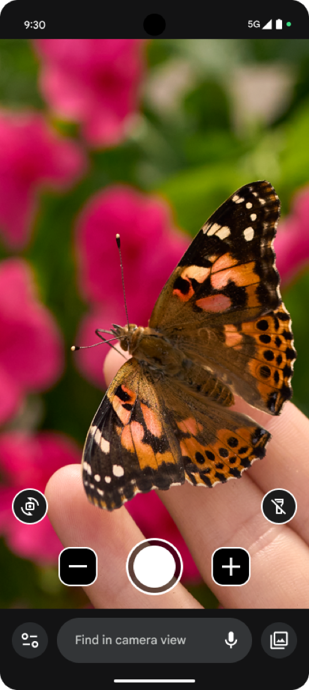

00Work
The work, and the difference it made.
Six products, built with the people who use them. Three are written up here; three more case studies are on the way. Accessibility and older adults are the through-line, and the range shows the craft travels.
01Accessibility & older adultsThe specialty
Products built around how people use them.
Four studies where disabled users and older adults were the center of the work, not a late check. Three are written up; Monarch is on the way.

Pixel Magnifier 4.8 stars / 154K MAU Built around how low-vision users hold the phone. Read the case study → Case study Simple View
80% conversion
Older adults in Japan. Accessibility pulled out of buried settings into onboarding.
Read the case study →
Case study
Simple View
80% conversion
Older adults in Japan. Accessibility pulled out of buried settings into onboarding.
Read the case study →
Case study Guided Step
−44% obstacle hits / CHI 2026
Pedestrian navigation with blind users at the center. A 20-participant study.
Read the case study →
Case studyPhoto coming
Monarch braille
Braille / tactile
A refreshable braille and tactile-graphics device, designed with blind and low-vision readers.
Case study coming
Guided Step
−44% obstacle hits / CHI 2026
Pedestrian navigation with blind users at the center. A 20-participant study.
Read the case study →
Case studyPhoto coming
Monarch braille
Braille / tactile
A refreshable braille and tactile-graphics device, designed with blind and low-vision readers.
Case study coming
The craft travels beyond accessibility
02Recognition
Shipped at scale, and on the record.
Guided Step submitted to CHI 2026, a 20-participant study across three continents.
Red Dot award for the Google Home light-pattern system, shipped across 25M+ devices.
Twenty years at Staff and Principal at Google, Microsoft, and Motorola. IAAP member, pursuing CPACC.
Want the depth behind a number? Ask.
Tell me what you are building and who it is for. I will walk you through the work that is closest to your problem, and tell you honestly whether I am the right person.
Start a conversation